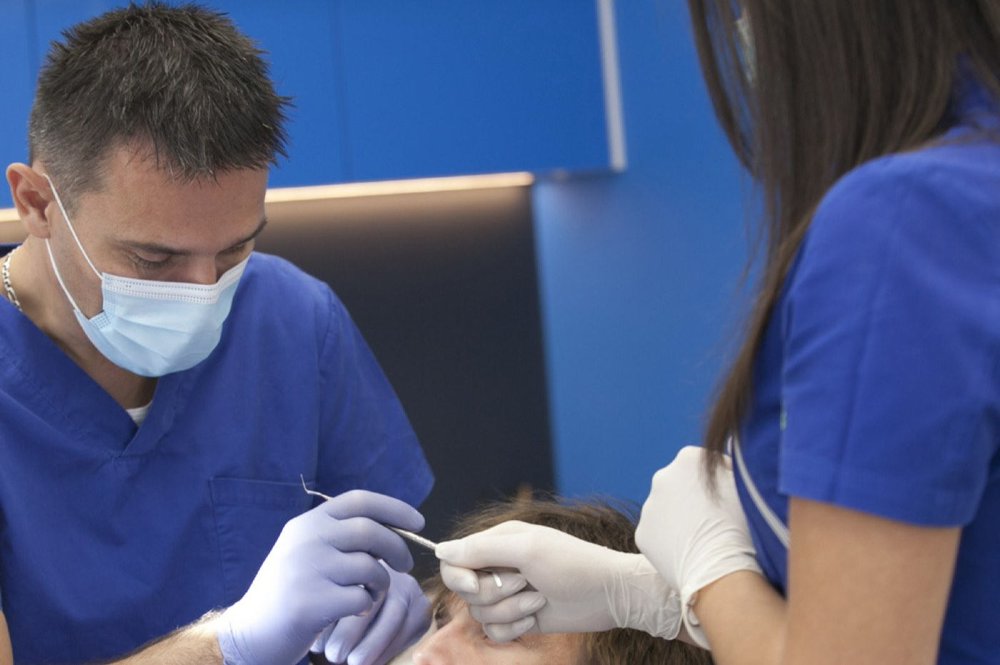

01 / 08
Redovni pregledi
Redovni stomatološki pregledi prvi su i najvažniji korak u održavanju zubnog zdravlja. Pomažu otkriti probleme na samom početku, kada je liječenje jednostavnije, i najbolji su način za sprječavanje karijesa, bolesti desni, problema s korijenskim kanalima, karcinoma usne šupljine i mnogih drugih problema.
Učestalost pregleda ovisi o zdravstvenom stanju, životnoj dobi, prehrambenim i drugim navikama.
Javite se što prije ako primijetite:
- osjetljivost zuba na vruće ili hladno
- natečene desni ili krvarenje pri pranju zuba
- loš zadah ili loš okus u ustima
- bol ili oteklinu u ustima, na licu ili vratu
- poteškoće pri žvakanju ili gutanju, često suha usta
- bolnu čeljust pri buđenju ili žvakanju, ranu u ustima koja ne prolazi
Redoviti pregled posebno je važan za:
pušače, trudnice, osobe s ispunima, krunicama, implantatima ili protezama, osobe s obiteljskom anamnezom bolesti desni ili zuba, osobe s dijabetesom, kardiovaskularnim bolestima, poremećajima prehrane ili narušenim imunitetom te pacijente na zračenju, kemoterapiji ili hormonskoj terapiji.